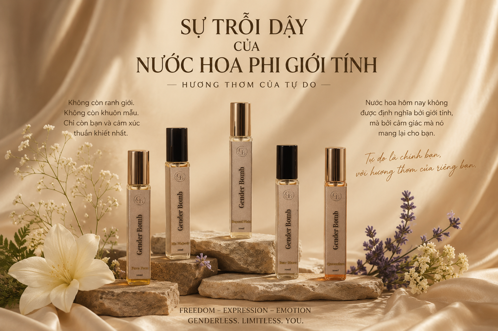

Trong nhiều năm, nước hoa luôn được gắn với những nhãn mác quen thuộc như "dành cho nam" hay "dành cho nữ". Thế nhưng, khi con người ngày càng đề cao cá tính và quyền tự do thể hiện bản thân, một câu hỏi được đặt ra: liệu mùi hương có thực sự thuộc về một giới tính nhất định? Từ sự thay đổi trong tư duy ấy, xu hướng nước hoa phi giới tính đã ra đời, mở đường cho những thương hiệu như GenderBomb – nơi mỗi mùi hương được tạo nên từ cảm xúc thay vì những khuôn mẫu giới hạn.
Nguồn gốc của sự phân chia
Trong suốt nhiều thập kỷ, ngành công nghiệp nước hoa thường phân chia sản phẩm thành hai nhóm rõ rệt: nước hoa dành cho nam và nước hoa dành cho nữ. Những mùi hương mạnh mẽ, gỗ, da thuộc thường được gắn với nam giới, trong khi hương hoa cỏ, ngọt ngào hay trái cây lại được xem là dành cho nữ giới.
Sự phân chia này dần trở thành một quy chuẩn quen thuộc trên thị trường. Tuy nhiên, khi xã hội ngày càng đề cao tính cá nhân và quyền tự do thể hiện bản thân, nhiều người bắt đầu đặt câu hỏi: Liệu một mùi hương có thực sự thuộc về một giới tính nhất định, hay đơn giản chỉ là sự phản ánh cảm xúc và cá tính của người sử dụng?
"Mùi hương là cảm xúc. Cảm xúc không có giới tính."
Sự trỗi dậy của nước hoa phi giới tính
Ngày nay, xu hướng nước hoa phi giới tính (Genderless Fragrance) đang phát triển mạnh mẽ trên toàn thế giới. Người dùng không còn lựa chọn nước hoa dựa trên nhãn mác "nam" hay "nữ" mà quan tâm nhiều hơn đến cảm giác mà mùi hương mang lại. Một mùi hương có thể khiến chúng ta cảm thấy tự tin hơn trong những ngày quan trọng, bình yên trong những khoảnh khắc thư giãn hoặc mạnh mẽ khi đối mặt với thử thách. Chính vì thế, nước hoa đang dần trở thành công cụ thể hiện cá tính và cảm xúc thay vì chỉ là sản phẩm gắn với giới tính
Xu hướng này phản ánh sự thay đổi trong tư duy của thế hệ trẻ – những người đề cao sự tự do, khác biệt và mong muốn được là chính mình.

GenderBomb và triết lý vượt khỏi giới hạn
Tại GenderBomb, chúng tôi tin rằng giá trị của nước hoa không nằm ở giới tính, mà nằm ở cảm xúc mà nó khơi gợi. Với thông điệp "Nước hoa từ cảm xúc", GenderBomb tạo nên những mùi hương đại diện cho nhiều trạng thái cảm xúc khác nhau của con người. Đó có thể là sự kiêu hãnh và quyến rũ của Her Majesty, sự lịch lãm của His Majesty, nét ngọt ngào của Pure Fem, nguồn năng lượng mạnh mẽ từ Raw Masc, tinh thần tự do của Beyond Fluid hay niềm tự hào và tự tin mà Queendom mang lại.
Mỗi chai nước hoa không chỉ là một sản phẩm, mà còn là một câu chuyện riêng. Chúng tôi mong muốn mỗi khách hàng khi lựa chọn GenderBomb sẽ tìm thấy một phần cảm xúc của chính mình trong từng tầng hương, từ đó tự tin thể hiện bản sắc và dấu ấn cá nhân theo cách riêng nhất.
Kết luận
Khi lựa chọn một mùi hương, điều quan trọng nhất không phải là dòng chữ "dành cho nam" hay "dành cho nữ" trên bao bì, mà là cảm giác mà mùi hương ấy mang lại cho bạn.
Bởi đôi khi, điều khiến người khác nhớ về bạn không phải là những gì bạn đã nói, mà chính là cảm giác bạn để lại sau khi rời đi.
GenderBomb tin rằng mỗi cảm xúc đều xứng đáng được tôn vinh và mỗi cá nhân đều có quyền lựa chọn mùi hương phản ánh đúng con người mình.